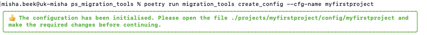
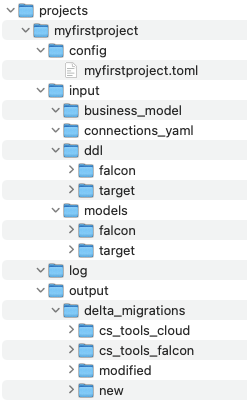

Creating a configuration file¶
Whenever you are starting a new migration project, there are two steps you need to take to prepare your enviroment and set up your project:
1. Set up the directory structure and create a template project configuration file
2. Set/Adjust the settings in the project configuration file according to the needs of your project
Setting up the directory structure and template configuration file¶
There is a command in migration_tools, which will take care of that for you and that is the create_config command. Please see the command create-config for more details on how this command works.
You can run the following command to set up the structure and template configuration file for a project called myfirstproject
migration_tools create_config --cfg-name myfirstproject
If everything went well, the following message will be presented on your screen: 
The directory structure has now been created and a template configuration file has been created.

Configuring for model validation and YAML migration¶
In the folder projects/myfirstproject/config/ a template configuration file has been created for your project with the name myfirstproject.toml. You will now need to tweak these settings for the needs of your project. Please see the command create-config for more details on the various configuration settings. Typically, however, for model validations and YAML migration, you probably only need to change the source and target platform.
In this example we are doing a migration from Falcon to Redshift, so we set those two parameters on top of the configuration file and leave the rest as is.
[MIGRATION]
# Name of the source platform
SOURCE_PLATFORM="FALCON"
# Name of the target platform
TARGET_PLATFORM="REDSHIFT"
With these configuration setting made, we are ready to do some model validations.
Configuring for delta migrations etc¶
In the folder projects/myfirstproject/config/ a template configuration file has been created for your project with the name myfirstproject.toml. You will now need to tweak these settings for the needs of your project. Please see the command create-config for more details on the various configuration settings. In order to be able to run delta migrations you will need to fill in the delta migration parameters like source/destination url, credentials etc.
In this example we are doing a migration from Falcon to Cloud, so we set the SOURCE_TS_URL to the URL of our FALCON instance and the DEST_TS_URL to the URL of the cloud instance.
In general we can migrate tml objects from any TS instance to another.
[DELTA_MIGRATION]
SOURCE_TS_URL = "https://mycompany.thoughtspot.com"
SOURCE_USERNAME = "tsadmin"
SOURCE_PASSWORD = "password"
DEST_TS_URL = "https://mycompany.thoughtspot.cloud"
DEST_USERNAME = "tsadmin"
DEST_PASSWORD = "password"